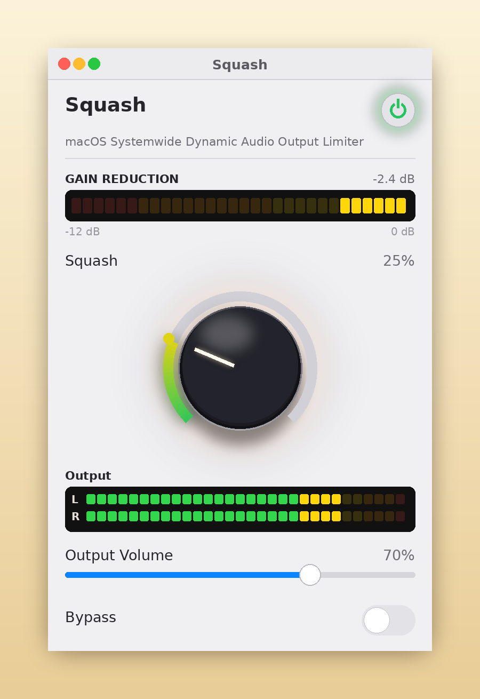
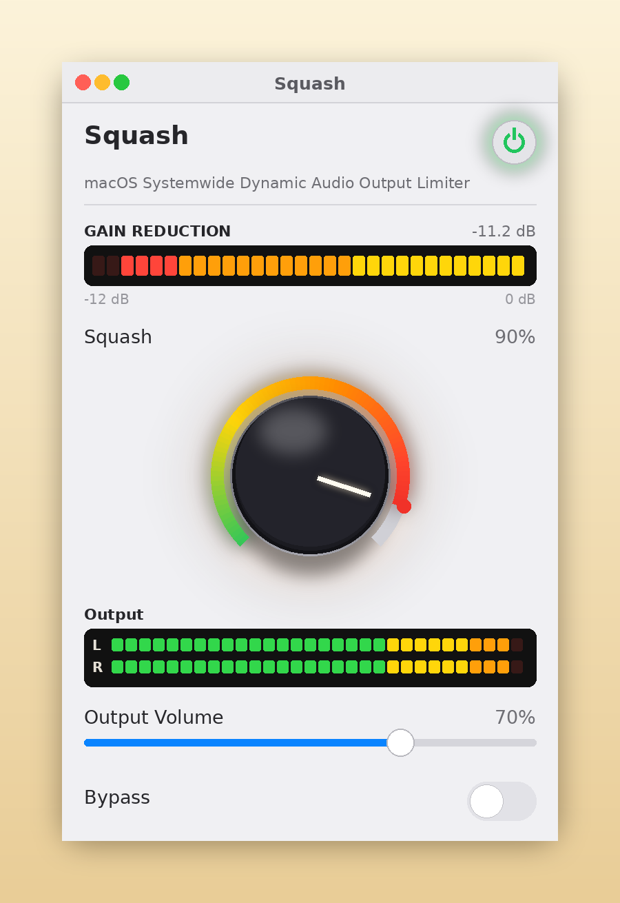

Squash
Radio station limiting for internet audio levels
Download SquashWhat it does
Squash is a free limiter for your Mac’s system audio. It helps control loud DJs, quiet interviews and blaring station IDs at a steady, comfortable level — similar to a broadcast limiter at a radio station. One knob control.
One knob
● Radio Limit
The one scheme, and the one Squash was tuned around: smooth, transparent leveling.
● A built-in governor
However far you turn the knob, the leveling can only go so far — and a separate safety limiter catches the peaks.
● Smooth recovery
The gain eases back instead of bouncing, so the level never breathes or pumps.
Screenshots



Installing
- Download the zip and open it. Drag Squash into your Applications folder.
- Double-click Squash once. macOS will refuse (it’s careful with apps from outside the App Store.)
- Open System Settings → Privacy & Security, scroll down, and click Open Anyway. (You only need to do this once.)
- Launch Squash, press the power button, and allow audio capture when asked. (That prompt is the app doing its job.)
Squash processes your Mac’s audio on your Mac.
Nothing is recorded, nothing is uploaded, there’s nothing to sign up for.
It only works while it’s running. Quit and your Mac sound is unchanged.